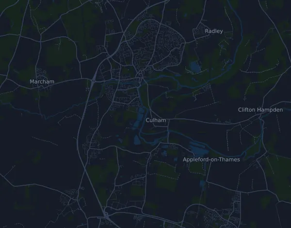

Abingdon Marathon 42.5 km
- Distance
- 42.5 km
- Elevation gain
- ↑ 68 m
- Highest point
- 73 m a.s.l.
- Surface
- Road
- Profile
- Flat
- Aid stations
- 12
Elevation profile
Prepare with Mila
Mila is a running coach app. Add a race to your plan and the coach plans your weeks up to race day around your form, and gives you a finish-time forecast and a plan for pacing, drinks and fuel on the course.

The right run, on the right day.
The course

About the course
Abingdon Marathon is a road race in Abingdon (Tilsley Park), United Kingdom, over 42.5 km. The course climbs 68 m and descends 69 m in total, 1.6 m per km, which makes it flat. The highest point is 73 m above sea level and the lowest 49 m.
The course has no sustained climbs of 25 m or more.
The organizer lists 12 aid stations, the first at km 4.8 and the last at km 38.6. There is one cut-off time along the course.
In the Mila app, the coach describes the course in detail in your language and plans your pacing and fueling for it.
Before the start
Aid stations
| At | What's there |
|---|---|
| km 4.8 | water |
| km 9.7 | water |
| km 14.5 | water |
| km 17.7 | sports drink |
| km 19.3 | water |
| km 22.5 | sports drink |
| km 24.1 | water |
| km 29.0 | water |
| km 32.2 | sports drink |
| km 33.8 | water |
| km 37.0 | sports drink |
| km 38.6 | water |
Start location
Tilsley Park Stadium (track), Dunmore Road, Abingdon OX14 1PU
Cut-off times
| At | By |
|---|---|
| km 42.5 | 6 h after the start |
Source: abingdonmarathon.org.uk, retrieved 16 October 2026
Pace table
Abingdon Marathon 42.5 km in 3:00:00 – pace per km and splits
4:14 per km · km 10: 42:19 · km 21.1: 1:29:17 · km 30: 2:06:56 · km 40: 2:49:15 · finish: 3:00:00
Abingdon Marathon 42.5 km in 3:30:00 – pace per km and splits
4:56 per km · km 10: 49:22 · km 21.1: 1:44:10 · km 30: 2:28:06 · km 40: 3:17:28 · finish: 3:30:00
Abingdon Marathon 42.5 km in 4:00:00 – pace per km and splits
5:39 per km · km 10: 56:25 · km 21.1: 1:59:02 · km 30: 2:49:15 · km 40: 3:45:40 · finish: 4:00:00
Abingdon Marathon 42.5 km in 4:30:00 – pace per km and splits
6:21 per km · km 10: 1:03:28 · km 21.1: 2:13:55 · km 30: 3:10:25 · km 40: 4:13:53 · finish: 4:30:00
The times assume an even pace the whole way. This is plain arithmetic, not a forecast: on climbs, in crowds and at aid stations the pace varies.
Frequently asked questions
When is Abingdon Marathon 42.5 km?
The race took place on Sunday, 18 October 2026. The date of the next edition is not set yet.
How long is Abingdon Marathon 42.5 km and how much climbing is there?
The race is 42.5 km with 68 m of climbing and 69 m of descent. The highest point is 73 m above sea level.
What is the course of Abingdon Marathon 42.5 km like?
The course is flat, with 1.6 m of climbing per km on average. It has no sustained climbs of 25 m or more. Start and finish are in the same place. The surface is road.
Are there aid stations at Abingdon Marathon 42.5 km?
Yes. The organizer lists 12 aid stations: km 4.8 (water); km 9.7 (water); km 14.5 (water); km 17.7 (sports drink); km 19.3 (water); km 22.5 (sports drink); km 24.1 (water); km 29.0 (water); km 32.2 (sports drink); km 33.8 (water); km 37.0 (sports drink); km 38.6 (water).
Are there cut-off times at Abingdon Marathon 42.5 km?
Yes, according to the organizer: km 42.5: 6 h after the start.
How should I pace Abingdon Marathon 42.5 km?
Aim for an even effort the whole way, and hold back in the first kilometres when your legs feel fresh and the field pulls away. The course is flat, so an even pace per kilometre works well. In Mila you get a pace plan for this course, based on your own form.
More races like this
More races nearby
- Brighton Marathon 42.2 km4 April 2027 · Brighton, United Kingdom
- Manchester Marathon 42.2 km18 April 2027 · Manchester (Old Trafford, Trafford), United Kingdom
- London Marathon 42,2 km24 April 2027 · London, United Kingdom
- Three Peaks Race 37.4 km24 April 2027 · Horton-in-Ribblesdale, United Kingdom
- Belfast City Marathon 42.2 km2 May 2027 · Belfast, United Kingdom
- AJ Bell Great Manchester Run 10K23 May 2027 · Manchester, United Kingdom
Prepare with Mila
The right run, on the right day.
Details come from the course file and the organizer's information. Check the date, start times and rules with the organizer.
Mila is not affiliated with, sponsored by or endorsed by the organizer or the race's sponsors. Names and trademarks belong to their owners. Organizer or rights holder? Ask for a change or a removal